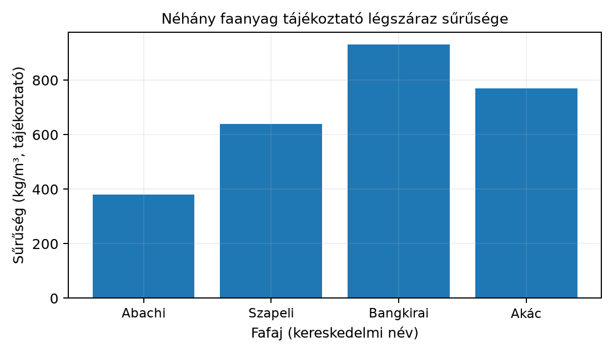
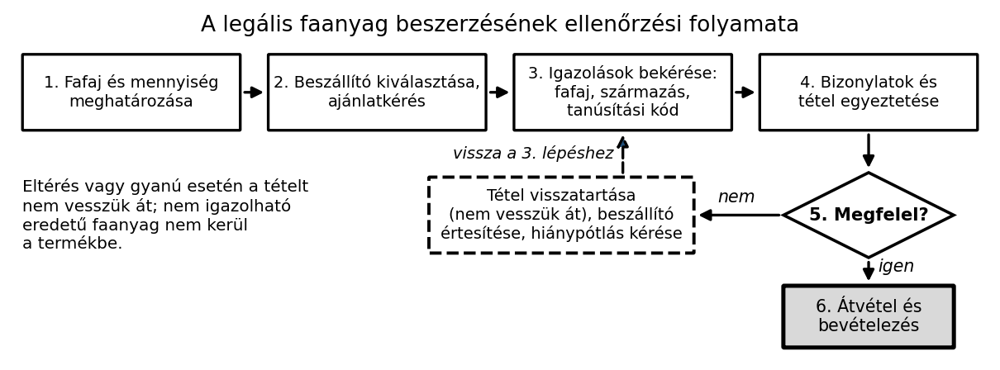

Egy asztalos műhelyben gyakori helyzet: a megrendelő kültéri teraszt szeretne, és azt mondja, „legyen bangkirai, mert azt hallotta, hogy az örök élet”. Máskor egy belső asztalos munka kapcsán mahagóni jellegű vörösesbarna fát kér, de a pontos fafajt nem ismeri. A szakembernek ilyenkor egyszerre kell döntenie szín, tartósság, megmunkálhatóság, ár és jogszerű beszerezhetőség kérdésében. Ha rosszul választ, a termék kint korhad, belül elszíneződik, vagy a beszerzési papírok hiánya miatt a vállalkozás hatósági ellenőrzéskor bajba kerül. Ezért ebben az alfejezetben a fontosabb trópusi fafajokat, a helyettesítés lehetőségeit és a legális, tanúsított faanyag beszerzésének alapjait tanuljuk meg.
Képzelj el egy műhelyasztalt, amelyen egymás mellett fekszik néhány gyalult deszka. Az egyik sötétbarna, olajos tapintású, enyhén fűszeres illatú – ez tíkfa. A másik középbarna, aranysárgán csillogó, jellegzetes váltakozó irányú csíkjaival – ez szapeli. A harmadik világos, szinte fehér-sárgás, igen könnyű – ez abachi. A negyedik hazai akác, zöldes-sárgás, nehéz, kemény. Már ebből a kis képből is látszik: a trópusi fafajok nem egyetlen „egzotikus” csoport, hanem nagyon eltérő anyagok. Amikor a fafaj nevét hallod, mindig kérdezd meg a botanikai nevet is, mert a kereskedelmi nevek megtévesztőek lehetnek.
Az alábbi ábra három jellemző trópusi fafaj és az akác tájékoztató légszáraz sűrűségét veti össze.

Megjegyzés. A sűrűség csak tájékoztató. Az akácot azért tettem az ábrára, mert a hazai helyettesítés egyik fő fafaja. A pontos értéket mindig az adott szállítmányhoz tartozó szállítói adatlapon vagy szabványos anyagjellemző táblázatban keresd.
Definíció. A trópusi fafaj olyan fafaj, amely jellemzően a trópusi és szubtrópusi éghajlati övezetben nő, és onnan kerül a feldolgozóiparba. A kereskedelmi név nem azonos a botanikai névvel.
Definíció. A kereskedelmi név az a megnevezés, amelyet a faanyag-kereskedelemben használnak. Egy kereskedelmi név több botanikai fajra is utalhat, és a fajok tulajdonsága kissé eltérhet. Például a „meranti” név különböző Shorea fajokat takarhat.
Definíció. A legális faanyag olyan fakitermelésből származó fa, amelyet a termelő ország jogszabályai szerint termeltek ki, szállítottak és értékesítettek. Ennek igazolására a beszállítónak dokumentumokat kell tudnia bemutatni.
Definíció. A tanúsított faanyag olyan faanyag, amelynek útja a fenntartható erdőgazdálkodástól a feldolgozó üzemig független tanúsító rendszer (FSC, PEFC) ellenőrzése alatt áll.
A gyakorlatban a „trópusi” szó önmagában nem garantál sem tartósságot, sem keménységet, sem színt. Ezért kell fafajonként tanulni.
Az alábbi táblázat a gyakorlatban gyakran előforduló kereskedelmi neveket mutatja. Az értékek tájékoztató tartományok, mert a termőhely, a kor és a fanedvesség erősen befolyásolja őket.
| Kereskedelmi név | Jellemző sűrűség (kg/m³, kb.) | Szín, megjelenés | Tartósság kültérben (tájékoztató) | Tipikus felhasználás |
|---|---|---|---|---|
| Meranti | 450–700 | rózsás, vöröses, barnás | közepes | nyílászáró, bútor, lambéria |
| Szapeli | 600–680 | középbarna, vöröses csík | közepes-jó | belső bútor, furnér, lépcső |
| Mahagóni (amerikai) – CITES-köteles | 500–650 | vörösesbarna | közepes-jó | belső bútor, hajóbelső, furnér |
| Tík (teak) | 580–730 | aranybarna, olajos | kiváló | kültéri bútor, fedélzet, ablak |
| Iroko | 620–680 | aranyszínű, barnul | jó | kültéri asztalosipar, nyílászáró |
| Wenge | 750–900 | nagyon sötét, fekete-barna csík | jó | belső bútor, parketta, intarzia |
| Merbau | 760–900 | barna-vöröses, sárga ásványi pontok | kiváló | kültéri burkolat, terasz |
| Bangkirai | 850–1000 | sárgásbarna, zöldesbarna | kiváló | kültéri burkolat, vízépítés |
| Abachi (ayous) | 320–420 | világos, krémfehér | gyenge | redőny, szauna, vakkeret, furnér |
A táblázat értékei tájékoztatók, ellenőrizendők a kiválasztott szállítmány adatlapján vagy MSZ EN szerinti anyagjellemző táblázatban.
Rövid jellemzés.
A kártyákon a rajzolat stilizált (pl. a szapeli váltakozó csíkjai, a tík olajos, pettyezett felülete, a wenge sötét alapon világos sávjai, a merbau ásványi pontjai), a színmező csak szemléltető; fekete-fehér nyomtatásban a minta és a felirat hordozza az információt. A HTML-változatban szűrhetsz (kültéri, beltéri, nagy sűrűségű, por-kockázat, hazai helyettesítő), és a kártyára kattintva megjelenik a helyettesítési és egészségvédelmi tudnivaló. A valódi faanyagot mindig mintadarabon és a szállítmány adatlapján azonosítsd.
A fafaj-helyettesítés nem egyszerűen árcsere. Egy anyag akkor helyettesít egy másikat, ha a funkciót, a tartósságot, a mérettartást, a megmunkálhatóságot és a megjelenést együttesen teljesíti.
Példa. Kültéri teraszburkolathoz a megrendelő bangkirait kér. Hazai alternatíva lehet az akác (gesztje) vagy a termofa (hőkezelt fa), például hőkezelt kőris. Mindkettő lehet megfelelő, de másképp viselkedik.
Tilos a helyettesítést úgy elvégezni, hogy a rajzon „tíkfa”, de az anyag valójában festett tölgy vagy ismeretlen trópusi fa. Ez a megrendelő megtévesztése, és a termék garanciális hibájához vezethet.
Továbbvitt eredmény. A fafaj-helyettesítést és a legális eredetet a beszerzés, az anyagnorma és az árajánlat készítése során is figyelembe kell venni, mert az árajánlatban megnevezett fafajnak egyeznie kell a szabásjegyzék, a szállítólevél és a számla megnevezésével. Ezt használjuk majd a könyv záró és vizsgafelkészítő részeiben.
A trópusi faanyag beszerzésekor a legfontosabb kérdés nem a szín, hanem az, hogy jogszerűen kitermelt anyagot vásárolunk-e.
Szabvány/jogszabály. Az EUTR (995/2010/EU) helyébe az erdőirtásmentes termékekről szóló (EU) 2023/1115 rendelet (EUDR) lép; ez a fa mellett más termékekre is vonatkozik (pl. szója, kakaó, kávé), földrajzi koordinátás nyomonkövetéssel; alkalmazásának kezdete és a kisvállalkozásokra vonatkozó szabályok ellenőrizendők (ellenőrizendő: hatályos uniós rendelet és magyar végrehajtási jogszabály).
Szabvány/jogszabály. Egyes trópusi fafajok (pl. amerikai mahagóni – Swietenia macrophylla) a veszélyeztetett fajok kereskedelméről szóló CITES egyezmény hatálya alá tartoznak; az EU-ban a 338/97/EK rendelet szabályozza; ilyen fához CITES-engedély/-igazolás szükséges (ellenőrizendő: hatályos függelékek; több Dalbergia, Pterocarpus faj is listán van).
A kellő gondosság (due diligence) kötelezettség elsősorban a piacra először forgalomba hozót terheli; a kereskedők és feldolgozók nyomonkövetési (beszállító–vevő) nyilvántartást vezetnek. A lényeg: igazolni kell, hogy az anyag nem illegálisan kitermelt. A feldolgozó asztalosnak ezért a beszállítójától kérnie kell:
Szabvány. A fenntartható erdőgazdálkodás két
legismertebb nemzetközi tanúsítási rendszere az FSC és
a PEFC. A tanúsított faanyag bizonylatain szerepelnie
kell a tanúsítványkódnak, és a szállítólevélen vagy számlán a
FSC 100%, FSC Mix vagy PEFC
jelölésnek. Ezek a jelölések a gyakorlatban a láncolati ellenőrzés
(Chain of Custody) alatt álló beszállítóknál használhatók
(ellenőrizendő: a tanúsító rendszerek jelölési
szabályai).
A tanúsítás nem azonos a legális eredettel. Egy fa lehet legálisan kitermelt, de nem tanúsított; és a tanúsítás sem mentesít a jogszerű kitermelés ellenőrzése alól.
A vásárlás előtt mindig ellenőrizd az alábbiakat. Ez lista, amelyet a műhelyben ki kell tölteni.
Beszerzési ellenőrzőlista.
Az alábbi folyamatábra a legális beszerzés lépéseit foglalja össze.

Figyelem. Ha a beszerzett faanyag eredete nem igazolható, ne használd fel a termékbe. Az illegális faanyag beépítése jogi felelősséget, lefoglalást, bírságot és a vevői bizalom elvesztését okozhatja (ellenőrizendő: hatályos szankciók).
Egyes trópusi fafajok pora erősebb bőr- és légúti irritációt, allergiás reakciót vagy szenzibilizációt okozhat, mint a hazai fafajok többsége.
Szabály. Minden trópusi fafaj megmunkálásakor gondoskodj pontmegfelelő elszívásról, és viselj a por jellegének megfelelő légzésvédőt (FFP2 vagy FFP3, az expozíciótól függően). A gyalulás, fűrészelés, marás és csiszolás során viselj védőszemüveget; szálkás fafajoknál (wenge) védőkesztyűt csak a gépi forgó szerszámtól távoli műveleteknél használj, mert forgó szerszámnál a kesztyű behúzásveszélyt jelent.
Egy asztalos műhely kültéri padokat készít egy panzió kertjébe. A vevő először „tikfa” padokat kér. Az asztalos tudja, hogy a valódi tík rendkívül drága, és az eredetet nehéz igazolni. Ezért ajánlatot ad három változatra:
A vevő a termofa kőrist választja, mert a barnás szín és a mérettartás fontos neki, az ára pedig kedvezőbb. Az asztalos a munkalapon rögzíti: a rajzon szereplő fafaj nem tíkfa, hanem hőkezelt kőris, tehát a szabásjegyzékben, a számlán és a garancialevélen is ez szerepel. A faanyag beszállítójától kér a hőkezelésről szóló műszaki adatlapot, hogy a kültéri tartósságot igazolni tudja. Ezzel elkerüli a megtévesztést és a reklamációt.
Válaszolj röviden, indoklással.
1. feladat (A). Sorold fel a felsorolt fafajok közül a kültérben jellemzően igen tartós fafajokat: abachi, tík, szapeli, bangkirai, meranti, iroko.
2. feladat (A). Magyarázd meg, miért nem elég a „mahagóni” kereskedelmi név a megrendeléshez.
3. feladat (B). Egy asztalos teraszt készít. A tervezett anyag bangkirai. Hasonlítsd össze a bangkirait és a akácot (gesztjét) a kültéri felhasználás szempontjából: sorold fel legalább két előnyt és két korlátot mindkét anyagnál.
4. feladat (B). Egy beszállító árajánlata szerint
Abachi deszkát kap, a szállítólevélen viszont csak „trópusi
világos fa” szerepel, botanikai név nélkül. Milyen beszerzési
ellenőrzési pontok hiányoznak? Mi a teendő?
5. feladat (C). Egy belső lépcsőfokhoz szapelit vagy wengét választhat a vevő. Melyiket javasolnád, ha a lépcsőt olyan helyre építik, ahol sok a természetes fény, és a porra érzékeny gyerekek is közlekednek? Indokold a választást a megjelenés, a megmunkálás és az egészségvédelmi kockázat szempontjából.
6. feladat (D). Készíts egy rövid beszerzési ellenőrzőlistát egy FSC-tanúsított tikfa kültéri bútorlap rendeléséhez. A lista tartalmazza a bizonylat ellenőrzésének legalább öt elemét, és azt, hogy eltérés esetén mi a teendő.
Önellenőrzés – válaszok.
1. feladat (A). A kültérben jellemzően igen tartós fafajok: tík, bangkirai, iroko. A szapeli és a meranti közepes tartósságú, az abachi kültérben gyenge.
2. feladat (A). A „mahagóni” kereskedelmi név több fajra utalhat, eltérő sűrűséggel, színnel, tartóssággal. A megrendelésben a pontos botanikai nevet és a felhasználási követelményeket kell rögzíteni, hogy a beszállított anyag egyértelmű legyen.
3. feladat (B).
4. feladat (B). Hiányzik a pontos botanikai név, a kereskedelmi név, a mennyiség ellenőrzése, a származási ország, valamint az esetleges tanúsítási kód. A szállítólevélen szereplő „trópusi világos fa” nem elég a legális faanyagrendelet szerinti kellő gondossághoz. A teendő: a tételt nem vesszük át, hiánypótlást kérünk, és ha nem igazolják, visszaküldjük.
5. feladat (C). A szapelit javasolnám. Indoklás: a szapeli középbarna, meleg színű, jól illik világos belső térbe; a wenge nagyon sötét, pora szálkás és irritáló lehet, ami porérzékeny gyerekeknél kockázatos. Ugyanakkor a szapeli váltakozó rostú, ezért gondos élezést és kisebb fogásmélységet igényel; a wenge keményebb és sötét, de a pora miatt kerülendő olyan helyen, ahol egészségügyi szempontok fontosak.
6. feladat (D). A beszerzési ellenőrzőlista elemei:
Eltérés esetén a tételt vissza kell tartani, pótlólagos igazolást kérni, és a bevételezést csak az eltérés rendezése után elvégezni.
A trópusi fafajok nem alkotnak egységes csoportot: a meranti, szapeli, mahagóni, tík, iroko, wenge, merbau, bangkirai és abachi eltérő sűrűséggel, tartóssággal, megmunkálhatósággal és egészségvédelmi kockázattal bír. A kereskedelmi név nem elég, a botanikai nevet is rögzíteni kell. A fafaj kiválasztása mindig funkció, tartósság, mérettartás, megjelenés, ár és jogszerű beszerezhetőség együttes döntése. Hazai alternatívaként a akác (gesztje) és a termofa gyakran jó helyettesítő, de a rajzon, a szabásjegyzéken és a számlán mindig a ténylegesen beépített fafajt kell szerepeltetni. A legális faanyag beszerzését uniós rendelet szabályozza, és a feldolgozó a kellő gondosság elve alapján a szállítótól igazolást kér. Az FSC és a PEFC tanúsítás a fenntartható erdőgazdálkodásra utal. A trópusi fafajok pora gyakran irritáló, ezért erős elszívás és légzésvédelem szükséges. A beszerzési ellenőrzőlista használata megelőzi a jogi és minőségi kockázatokat.